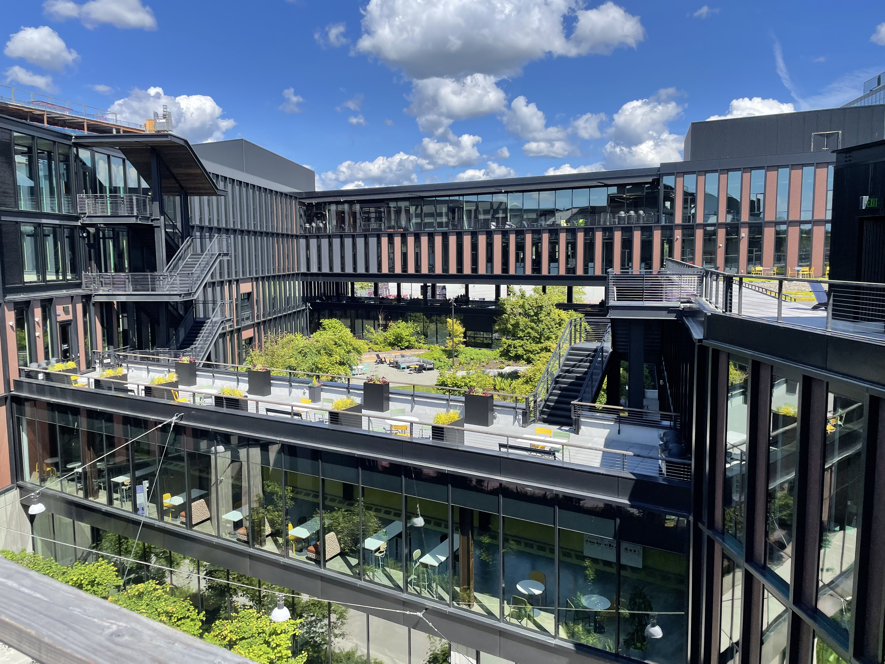
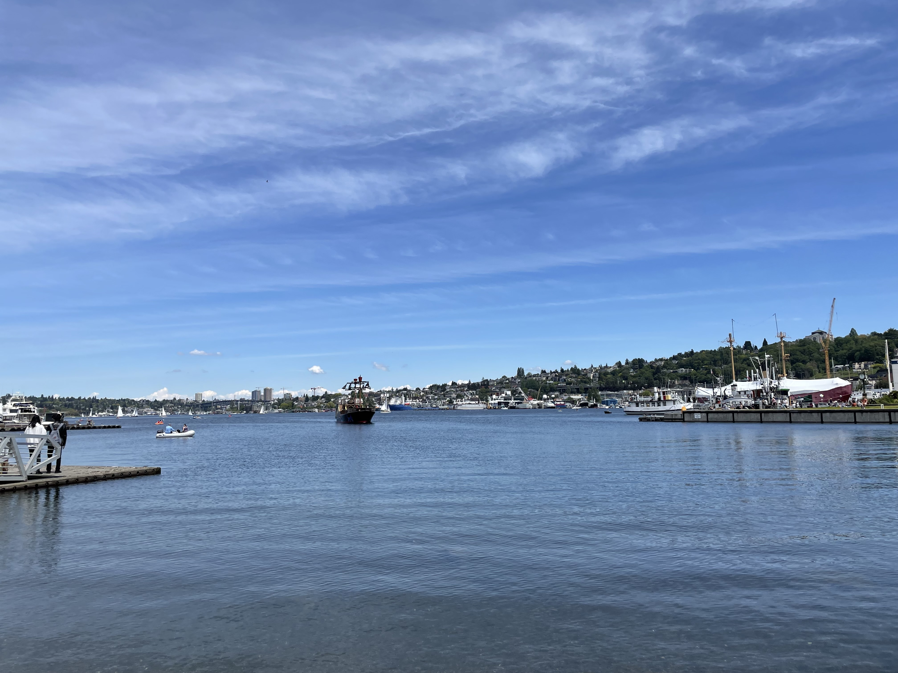
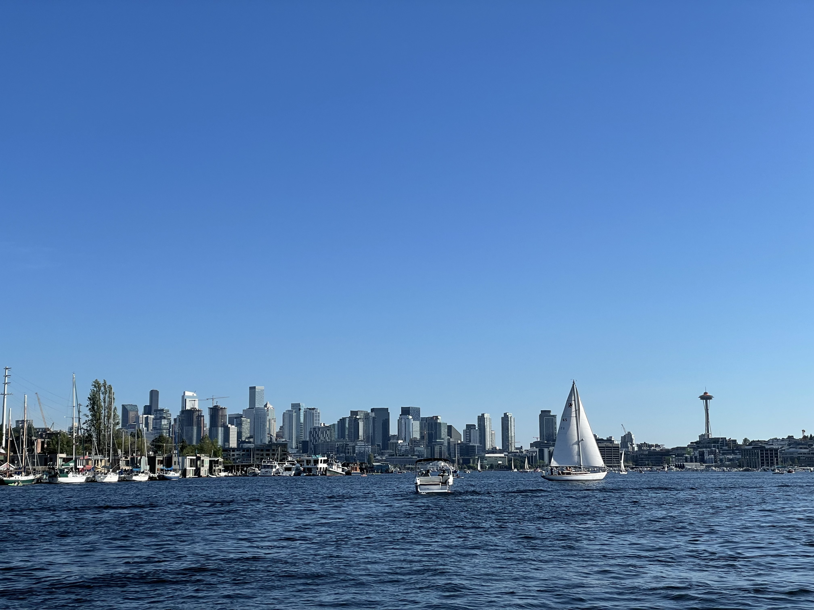
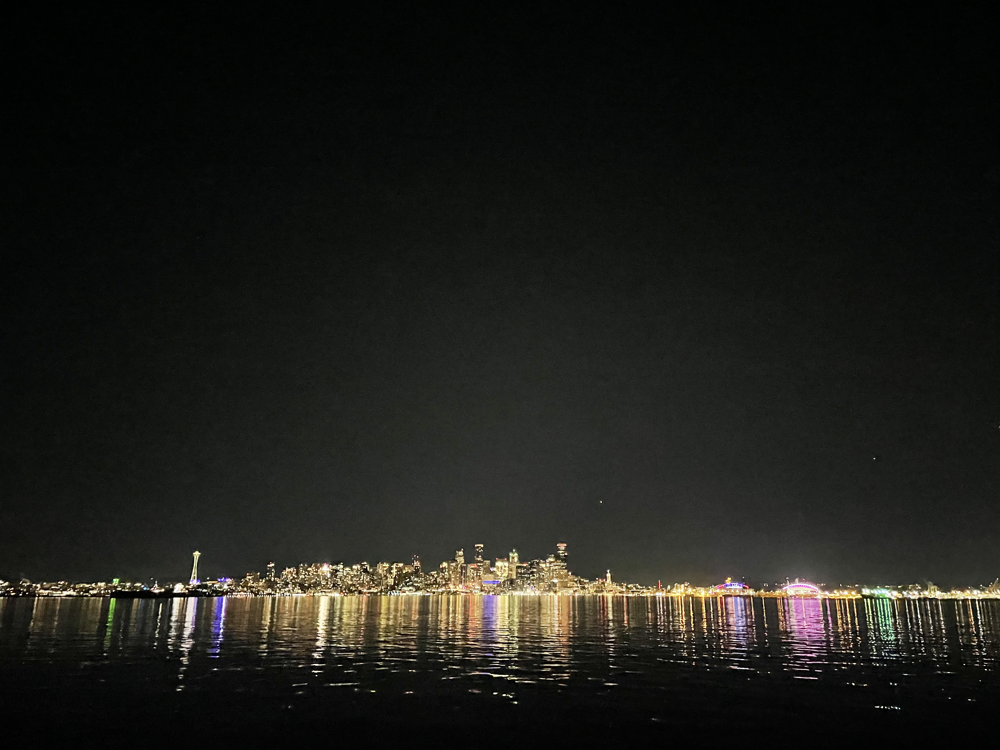
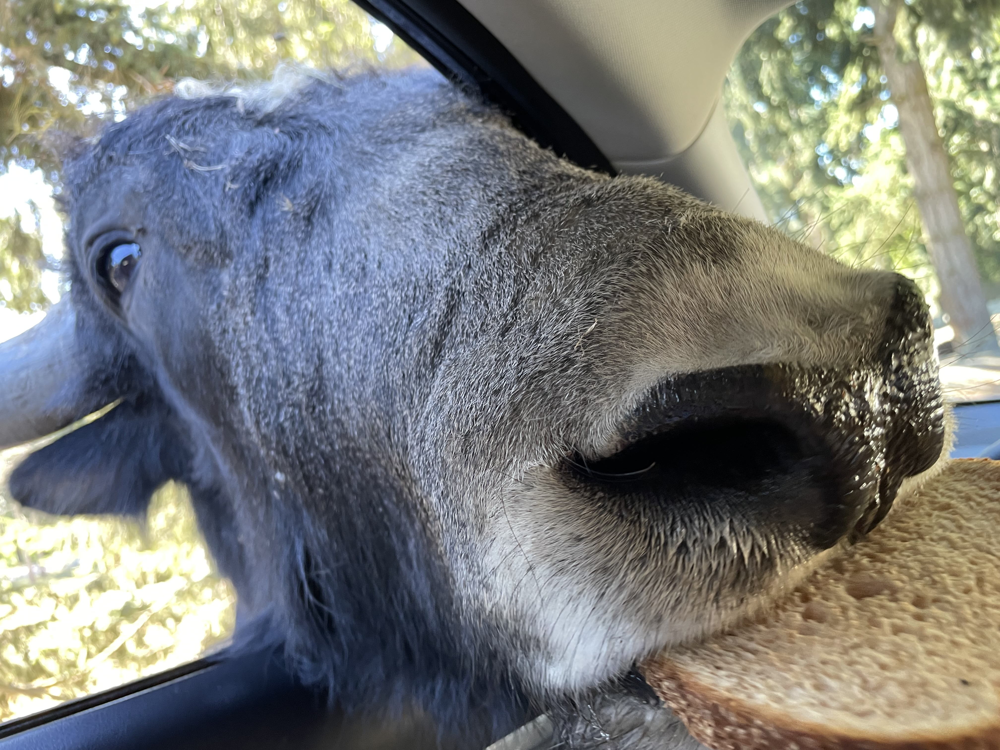
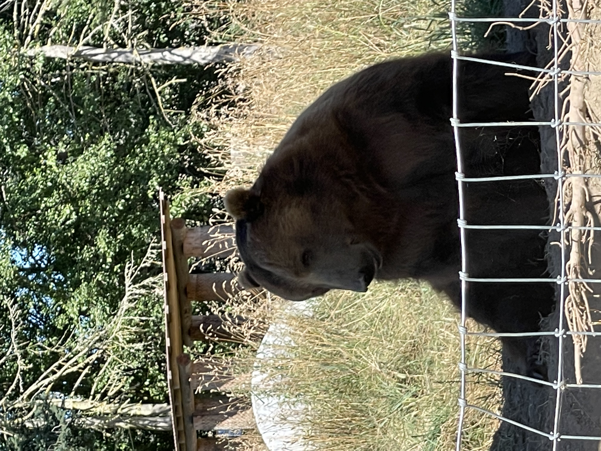
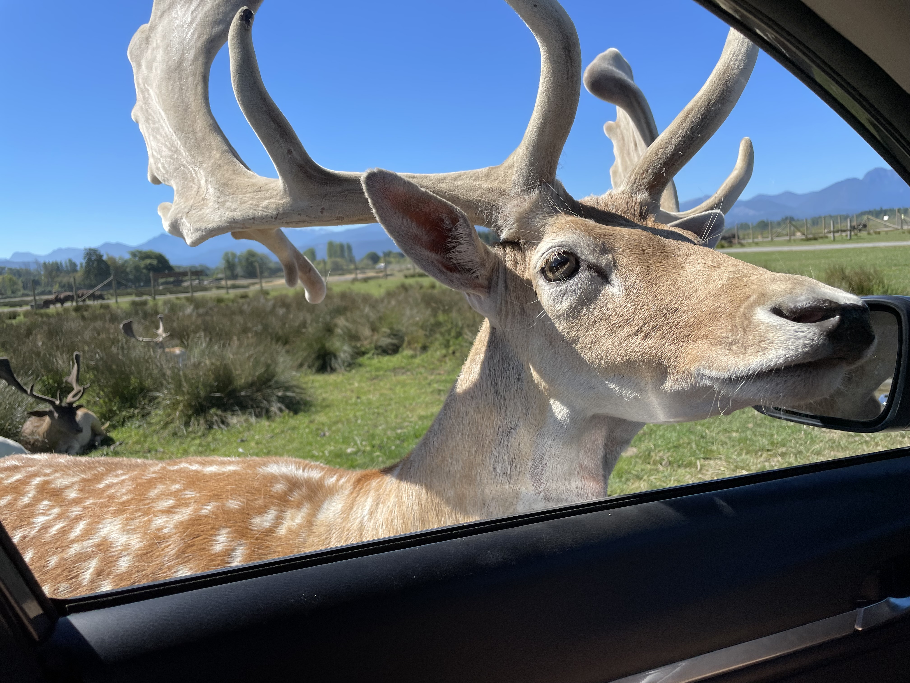
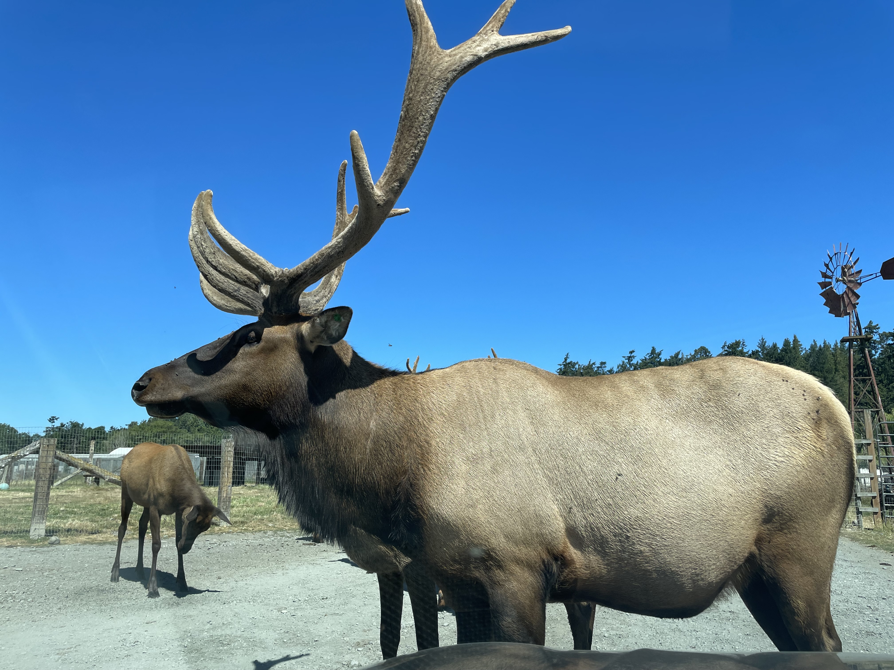

Scenic Spots
Seattle

Meta office in Bellevue, where I worked at during my internship

Lake Union in Seattle on a nice day

Charming day view of Seattle

Colorful night view of Seattle
Olympic

An exciting tibetan yak

A sleepy brown bear

A beautiful european fallow deer

A gigantic elk standing right in front of my car